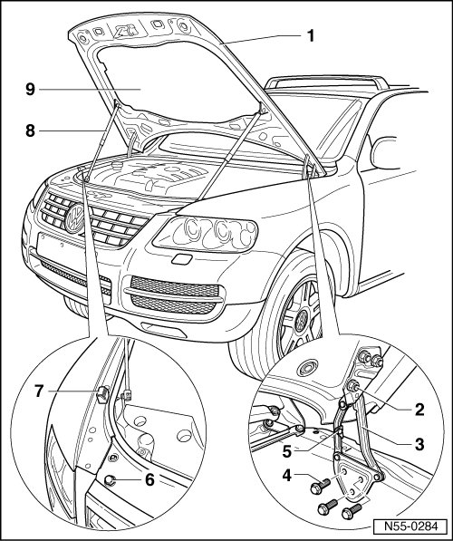
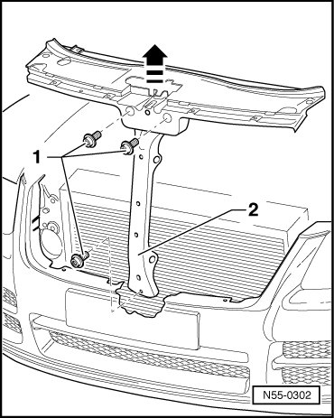

Hood: Adjustments
Hood
Hood, Adjusting
• The vehicle must be standing on the ground when adjusting the hood.
• It is only possible to correct or adjust hood lock height via lock support, a lateral adjustment of hood lock is not possible.
• The hood is properly adjusted when there is an overall even gap dimension when closed, it is not too far inward or outward and contours align.
• To adjust or check the gap dimensions, use adjustment gauge (3371).
• Adjusting the hood is described in several steps.

- Remove catch. Refer to --> [ (Item 1) Catch ]
- Remove the left and right gas-filled struts - 8 - from the hood - 1 -. Refer to --> [ Gas Strut ] Hood
- By loosening hex nuts - 2 - and bolts - 4 - at left and right on lid hinge - 3 - (do not unscrew completely), hood - 1 - can be aligned between fenders.
Tightening specification: Hex nuts - 2 - and bolts - 4 - 21 Nm
- The height of the front of the hood can be adjusted in relation to the fenders using the adjusting buffers - 6 -.
- In rear area, height of hood can be adjusted in relation to fenders with adjustment screw - 5 -.
- After adjusting the hood, install the catch. Refer to --> [ (Item 1) Catch ] and adjust it.
- Apply corrosion protection to the hinge - 3 -, the nuts - 2 - and the bolts - 4 - after installing or adjusting.
- If the hood is still difficult to close, correct the hood lock vertical adjustment.
- Adjust lid lock.
Hood Latch, Adjusting
• For clarity, the hood lock and lock support were removed from the lock carrier.
- Remove radiator grille. Refer to --> [ Radiator Grille, through 10.2006 ] Radiator Grille

- Loosen three bolts - 1 - (do not unscrew completely).
- Correct or adjust lock support - 3 - in - direction of arrow -.
Tightening specification: Bolts - 1 - 9 Nm